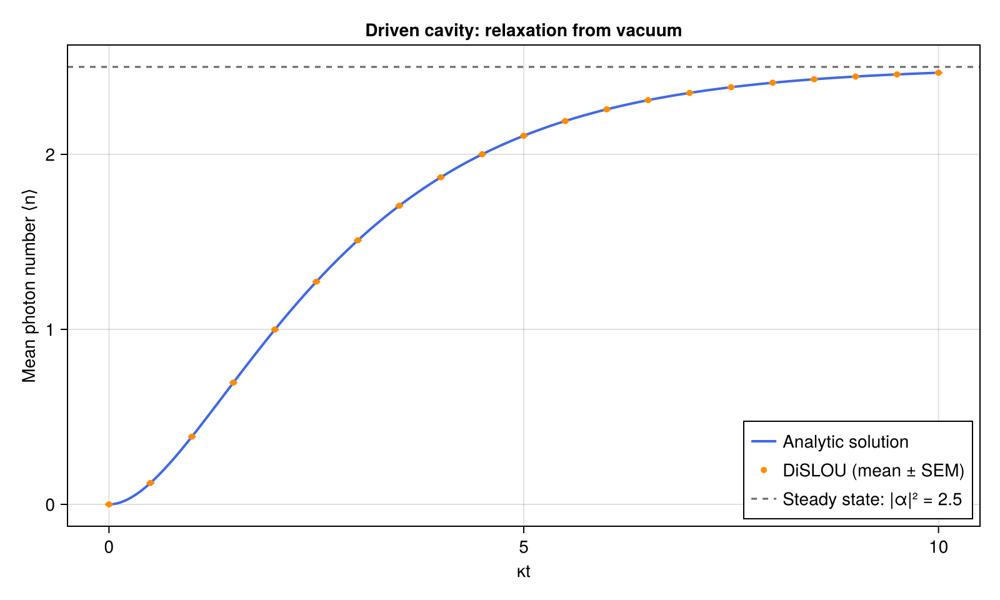

Quick start
This tutorial uses DiSLOUTrajectories.jl to simulate a driven, lossy cavity starting in vacuum. You will define the model with QuantumToolbox, choose a gauge, run a trajectory ensemble, and plot the mean photon number against an analytic solution. The final section shows how to discover the gauge automatically.
Run the code blocks in order in the same Julia session. After following the installation instructions, install CairoMakie for plotting:
using Pkg
Pkg.add("CairoMakie")- Import the packages
- Define the system
- Choose a gauge
- Run the time evolution
- Read and check the result
- Discover the gauge automatically
- Next steps
Import the packages
QuantumToolbox provides the quantum states and operator utilities, while DiSLOUTrajectories.jl implements dislou_solve to evolve the trajectories. CairoMakie also needs to be loaded when you reach the plotting step.
using QuantumToolbox, DiSLOUTrajectories
# output
Define the system
Consider a resonantly driven linear cavity with loss rate $κ$ and $ℏ=1$. The annihilation operator is $a$, and the drive is chosen so that the steady state is the coherent state $\lvert α\rangle$:
\[H=\frac{iκ}{2}(αa^†-α^*a),\qquad C=\sqrt{κ}\,a, \qquad \frac{dρ}{dt}=-i[H,ρ]+CρC^†-\frac{1}{2}\{C^†C,ρ\}.\]
Use a Fock basis cut-off of N = 20 states, well above the steady-state mean occupation $|α|^2=2.5$. destroy(N) constructs $a$, and a' is its adjoint. The list c_ops contains the physical collapse operators, including the square root of each decay rate.
N = 20
κ = 1.0
α = 1.5 + 0.5im
a = destroy(N)
H = im * κ / 2 * (α * a' - conj(α) * a)
c_ops = [sqrt(κ) * a]
(size(H), length(c_ops))
# output
((20, 20), 1)Initial state and observables
Start in vacuum with fock(N, 0). Sample the evolution from $t=0$ to $t=10/κ$ and measure the photon-number operator $n=a^†a$ with num(N). The entries of e_ops determine the order of the returned observables.
ψ0 = fock(N, 0)
tlist = collect(0.0:0.5:10.0) ./ κ
e_ops = [num(N)]
(length(tlist), real(expect(e_ops[1], ψ0)))
# output
(21, 0.0)Choose a gauge
DiSLOU uses shifted collapse operators to define its quantum trajectories. A gauge changes the unraveling while preserving the physical master equation; the solver handles the corresponding Hamiltonian correction internally. Keep H and c_ops in their physical, unshifted form.
For this cavity, center the gauge on the known steady-state amplitude $α$. DiSLOU adds the supplied shift to $C$, so use $ζ^{(g)}=-\sqrt{κ}α$ to obtain $C^{(g)}=\sqrt{κ}(a-α)$. The gauge matrix has one row per collapse operator and one column per gauge. Here both are one:
gauges = fill(-sqrt(κ) * α, 1, 1)
size(gauges)
# output
(1, 1)Run the time evolution
Pass the Hamiltonian, initial state, sample times, and collapse operators to dislou_solve. The parameter gauge_set is required, while the optional e_ops requests expectation values. Set the trajectory count and a random seed that the run is reproducible:
sol = dislou_solve(H, ψ0, tlist, c_ops;
gauge_set = gauges, e_ops, ntraj = 500, seed = 0)
(size(sol.expect), sol.times == tlist)
# output
((1, 21), true)The solver uses ensemblealg = :threads by default. Layers I and II are enabled by default, and in this example we do not activate Layer III.
Read and check the result
sol.expect and sol.expect_sem have one row per observable and one column per sample time. expect_mean and expect_sem select one observable as a vector; their default index is 1. The standard error of the mean (SEM) estimates Monte Carlo sampling uncertainty.
mean_n = real.(expect_mean(sol))
sem_n = expect_sem(sol)
(length(mean_n), length(sem_n), all(isfinite, sem_n))
# output
(21, 21, true)For a cavity starting in vacuum, the state remains coherent with amplitude $β(t)=α(1-e^{-κt/2})$. This gives a useful check of the simulation:
\[\langle n(t)\rangle=|α|^2(1-e^{-κt/2})^2 \;\longrightarrow\; |α|^2=2.5.\]
analytic_n = abs2.(α .* (1 .- exp.(-κ .* tlist ./ 2)))
steady_n = abs2(α)
(steady_n, isapprox(mean_n, analytic_n; atol = 1e-5, rtol = 0))
# output
(2.5, true)This linear model keeps individual trajectories close to the same coherent state, so sampling uncertainty is unusually small. For a general model, compare differences with the SEM and check convergence as you increase both ntraj and the Fock cutoff N.
Plot the photon number
Draw the analytic curve on a finer time grid, overlay the DiSLOU samples with SEM error bars, and mark the steady-state occupation. Evaluating fig displays the figure in an interactive Julia session.
using CairoMakie
plot_times = range(first(tlist), last(tlist); length = 201)
plot_analytic_n = abs2.(α .* (1 .- exp.(-κ .* plot_times ./ 2)))
fig = Figure(size = (800, 480))
ax = Axis(fig[1, 1];
xlabel = "κt", ylabel = "Mean photon number ⟨n⟩",
title = "Driven cavity: relaxation from vacuum")
lines!(ax, κ .* plot_times, plot_analytic_n;
color = :royalblue, linewidth = 2, label = "Analytic solution")
errorbars!(ax, κ .* sol.times, mean_n, sem_n;
color = :darkorange, whiskerwidth = 6)
scatter!(ax, κ .* sol.times, mean_n;
color = :darkorange, markersize = 7, label = "DiSLOU (mean ± SEM)")
hlines!(ax, [steady_n];
color = :gray40, linestyle = :dash, label = "Steady state: |α|² = 2.5")
axislegend(ax; position = :rb)
fig
# output
Figure()<!– Regenerate this image by running the quickstart blocks above, then save("docs/src/assets/quickstart.png", fig; pxperunit = 2). –>

The cavity approaches its coherent steady state on a timescale set by $1/κ$. The simulated points overlap the analytic curve and the error bars are smaller than the markers for this example.
Discover the gauge automatically
For this cavity the gauge is known analytically. The two discovery methods recover it from the same model. Install their optional dependencies once:
using Pkg
Pkg.add(["Clustering", "QuantumCumulants"])From preliminary trajectories
method = :trajectories evolves random coherent initial states and clusters their terminal amplitudes. Let them relax for $20/κ$ to find the single center near $α$:
using Clustering
trajectory_gauges = discover_gauges(H, c_ops;
method = :trajectories, mode_ops = [a], mode_dims = [N],
discovery_time = 20.0 / κ, step = 0.5 / κ,
seed_radii = [2.0], cluster_scales = [1.0], nseeds = 20, seed = 1)
(size(trajectory_gauges.shifts), isapprox(trajectory_gauges.shifts, gauges; atol = 1e-3))
# output
((1, 1), true)From semiclassical fixed points
method = :semiclassical finds stable mean-field fixed points from symbolic model constructors. For this linear cavity, the mean-field equation is exact: $\dot β=κ(α-β)/2$. The occupation search bound limits must contain $|α|^2$, it is independent of the Fock cutoff $N$.
using QuantumCumulants
# H
hamiltonian(b) = im * κ / 2 * (α * b' - conj(α) * b)
# C = √κ a
collapse_operators(b) = [sqrt(κ) * b]
semiclassical_gauges = discover_gauges(hamiltonian, collapse_operators;
method = :semiclassical, limits = (4.0,))
(size(semiclassical_gauges.shifts), isapprox(semiclassical_gauges.shifts, gauges; atol = 1e-9))
# output
((1, 1), true)Both results contain mode amplitudes in .centers and collapse-operator shifts in .shifts. You can pass either result as gauge_set:
discovered_sol = dislou_solve(H, ψ0, tlist, c_ops;
gauge_set = semiclassical_gauges, e_ops)
isapprox(real.(expect_mean(discovered_sol)), analytic_n; atol = 1e-5)
# output
trueNext steps
For complete and more advanced workflows, explore the examples. The API reference describes in detail solver options and the fields of DiSLOUSolution.